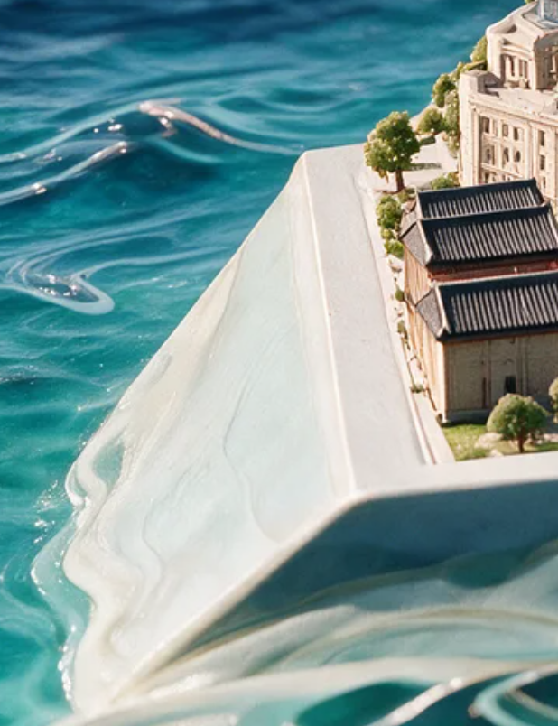
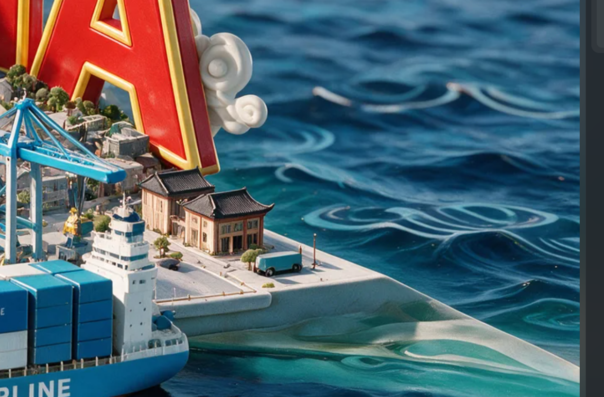
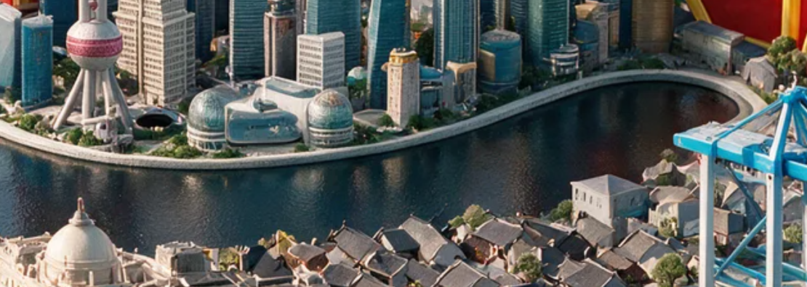
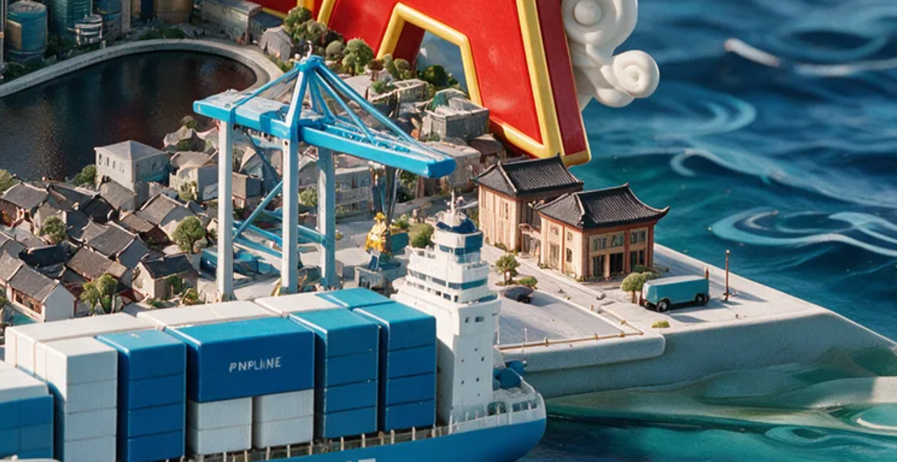
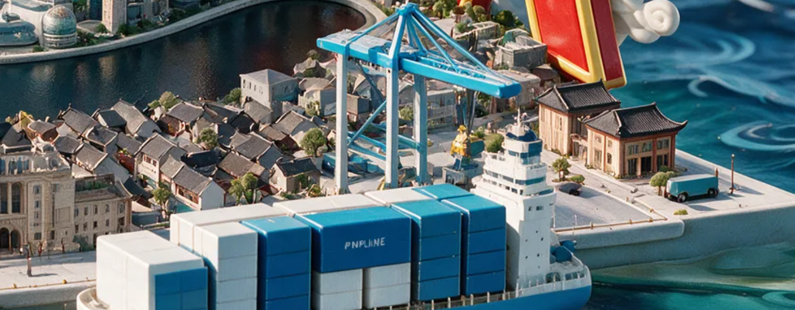
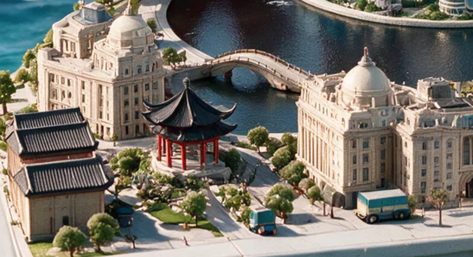
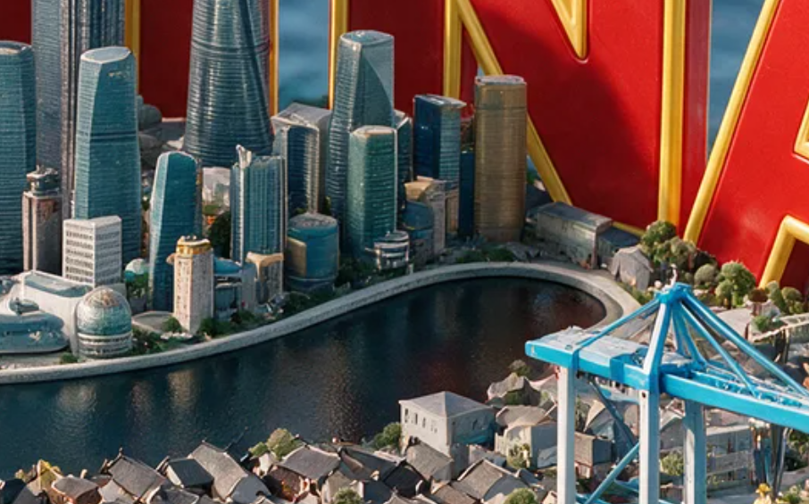
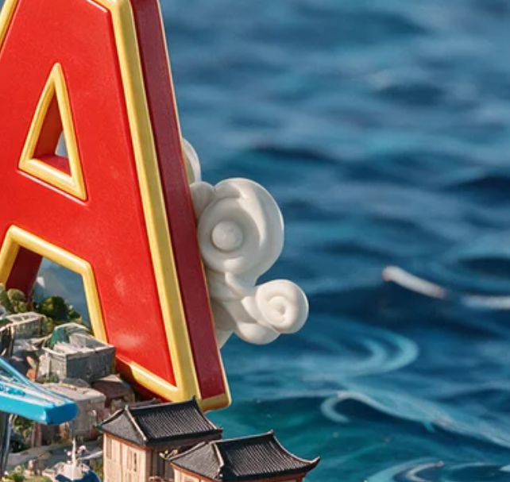
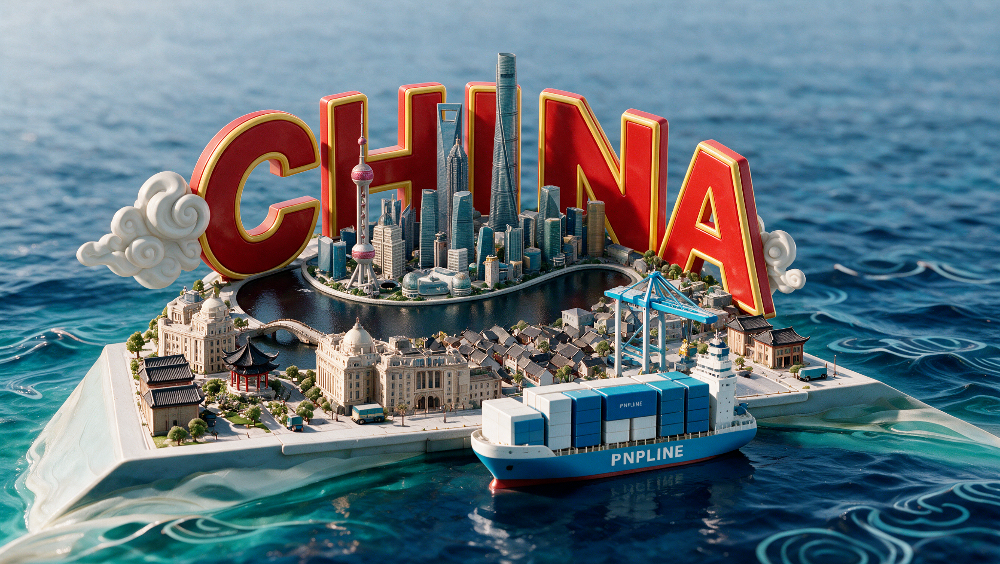

S2 스타일프레임 정합 — 잠금 충돌 검토
양측 해안 경사면 v032
양쪽 수직 벽을 바다 쪽으로 내려가는 경사면으로 변경했습니다. 상부 도시와 카메라·애니메이션은 유지했습니다.

스타일프레임 · 왼쪽
스타일프레임 · 오른쪽 수정 전 v031 · 수직 해안
수정 전 v031 · 수직 해안 수정 후 v032 · 양측 경사면
수정 후 v032 · 양측 경사면위 비교는 양쪽 끝을 보기 위한 넓은 렌즈의 확인용 렌더입니다. 저장본 카메라는 그대로입니다. 왼쪽 앞부분은 선박 출항 경로를 피해 경사 폭을 줄였습니다.
Blender: layout-proposal-v032.blend · 검증 10/10 · 변경 기록 · 원래 카메라 구도
CHINA 곡률 · 수로 곡선 수정 v028
중앙의 완만한 굽이와 오른쪽 S자 전환부를 연속 곡선으로 다시 만들었습니다. f156, 같은 카메라·조명으로 비교합니다.

사용자 제공 스타일프레임의 수로 곡선
 수정 전 v027 · 지적하신 두 연결부
수정 전 v027 · 지적하신 두 연결부 수정 후 v028 · 중앙과 오른쪽을 연속 곡선으로 연결
수정 후 v028 · 중앙과 오른쪽을 연속 곡선으로 연결수정 후 확대 원본 · Blender 파일: layout-proposal-v028.blend · 검증 결과 13/13 · 변경 기록
 CHINA와 도시·수로 전체 배치 · f156
CHINA와 도시·수로 전체 배치 · f156
이전 시도와 최초 기준
 v024 · 오른쪽 직선 느낌이 남았던 시도
v024 · 오른쪽 직선 느낌이 남았던 시도 v021 · 수정 전 기준
v021 · 수정 전 기준v021의 애니메이션 67개와 전체 프레임 카메라·선박·크레인 동작은 유지했습니다. 기존 파일은 보존했습니다.
크레인 수정 + S1 동작 연결 — v021
흰 수직 기둥과 짧은 청색 수평 붐을 유지하면서, 컨테이너 인양·안착·장치 회수·대기 위치 복귀를 연결했습니다. f72 안착과 이후 컨테이너·선박·카메라는 원본과 동일합니다.
 수정 전 v017
수정 전 v017 동작 연결 완료 v021 · 동일 f156
동작 연결 완료 v021 · 동일 f156S1–S2 f0–216 · 원래 동작 시간 · Workbench 검토 영상
작업 Blender 파일: layout-proposal-v021.blend · 전체 렌더 · 동작 검사 8/8 · 보호 범위 검사 · 작업 기록
초기 인양·안착·대기 프레임
초기 높이와 S1 카메라 이동은 승인 범위에서 수정했습니다. 도시·CHINA·구름·수로를 포함한 이전 수정이 누적되어 있습니다. 이전 정지 제안 v019는 아래 이력으로 남겨 둡니다.
크레인 외형 수정 제안 — v019
외형 검토용입니다. S1 인양 동작 통합은 아직 완료되지 않았습니다.
긴 돌출 붐을 짧은 수평 보로 바꾸고, 부두에 접지된 흰 기둥 4개와 청색 삼각 지지 구조를 만들었습니다. 기둥 주변 가옥 4동과 나무 2그루를 옮겨 작업 공간을 확보했습니다.
수정 전 v017 · 동일 f156 카메라 외형 제안 v019 · 실제 저장본 렌더
외형 제안 v019 · 실제 저장본 렌더
사용자 스타일프레임

Blender 외형 제안본 · 전체 렌더 · 동작 충돌·승인 필요 범위 · 정적 검사 5/5
기존 인양 장치는 새 붐보다 f0에서 약 1.39m, f156에서 약 2.74m 높습니다. 원본 동작은 보존했으며, 새 검토용 훅은 아직 원본 인양 리그에 연결하지 않았습니다. S1 인양 경로·높이·케이블과 필요한 근접카메라 조정은 별도 범위 확인 후 진행합니다.
NA 앞 도시 구성·디자인 수정 — v017
작은 기와·평지붕 건물 29동을 수변과 NA 아래까지 연결하고, 오른쪽 항구 건물 2동에 층별 창호와 올라간 처마를 만들었습니다. 나무·부두 소품·소형 트럭도 정리했습니다.
 수정 전 v014 · f156수정 후 v017 · 동일 카메라·렌더 영역
수정 전 v014 · f156수정 후 v017 · 동일 카메라·렌더 영역사용자 스타일프레임

작업 Blender 파일: layout-proposal-v017.blend · 전체 렌더 · 검증 9/9 · 수정 기록
C 앞 도시·문자·구름·수로 수정이 포함된 v014에서 이어 작업했습니다. 카메라 및 기존 48개 애니메이션 액션은 동일합니다. 크레인의 기존 규모·가림과 전체 장면의 미결 사항은 이번 구역 수정과 별도입니다.
C 앞 수변 도시 구성·디자인 수정 — v014
평평했던 돔을 창이 있는 받침부와 둥근 돔으로 바꾸고, 석조 건물 5동의 창·기둥·처마띠·지붕 난간을 세부 모델링했습니다. 정자는 붉은 기둥 8개와 휘어진 팔각 지붕으로 구성했습니다. 전통 건물의 이중 처마, 정원·보행로·가로등·소형 트럭 2대를 함께 정리했습니다.
 수정 전 v011
수정 전 v011 수정 후 v014 · 저장본 f156 직접 렌더
수정 후 v014 · 저장본 f156 직접 렌더사용자 스타일프레임 부분 이미지

작업 Blender 파일: layout-proposal-v014.blend · 전체 렌더 · 구성 검사 6/6 · 변경 범위·접지 검사
v011의 문자·구름·수로 수정이 포함된 장면입니다. C 앞 구역의 가시 모델을 교체했고, 기존 애니메이션 48개 액션은 동일합니다. 전체 스타일프레임 작업의 최종 확정 마스터는 아니며 기존 카메라 연속성·크레인 구도 검토는 별도입니다.
이전 수로·문자·구름 수정 기록
N·A 방향 수로 확장 — v011
수로 오른쪽 끝을 N·A 앞으로 늘리고, 보이는 굽이 구간의 폭을 약 0.87m → 2.10m 이상으로 넓혔습니다. 바깥 수변 벽과 육지·해안 면을 함께 연결했습니다. 도시 쪽 수변, 문자, 구름, 카메라와 애니메이션은 그대로입니다.
 수정 전 v007 · 오른쪽 수로가 짧고 좁음
수정 전 v007 · 오른쪽 수로가 짧고 좁음 수정 후 v011 · N·A 앞까지 이어지는 굽이
수정 후 v011 · N·A 앞까지 이어지는 굽이컨셉 수로 비교

Blender 수정본 v011 · 전체 렌더 · 수로 검증 · 변경 범위 검증
수로·육지·해안 메시 4개만 수정한 제안본입니다. 전체 마스터 확정본이 아니며, 기존 카메라 연속성과 크레인/전체 구도 검토는 별도 미결 사항입니다.
이전 문자·구름 수정 기록
A 오른쪽 구름 위치 수정 — v007
컨셉처럼 구름을 A의 뒤쪽·아래쪽에 배치했습니다. 글자의 오른쪽 가장자리에서 구름 일부만 드러납니다. 구름의 크기와 형상은 v006 그대로이며 위치만 변경했습니다.

컨셉 위치 수정 전 v006
수정 전 v006 수정 후 v007 · Blender 직접 렌더
수정 후 v007 · Blender 직접 렌더Blender 수정본 v007 · 전체 렌더 · 위치·가림 검사 · 변경 범위 검사
오른쪽 구름 루트 위치만 수정. 다른 2,622개 오브젝트 검사 항목과 48개 액션은 v006과 동일합니다. 전체 마스터 확정 전 제안본입니다.
이전 CHINA 곡률 수정 기록
CHINA 곡률 보강 · C를 수로 가까이 — v006
C를 수로 쪽으로 당기고, CHINA 전체의 원호 반경을 38 → 28로 줄였습니다. C의 정면이 지나치게 좁아지지 않도록 원호 방향을 함께 조정했습니다. 양쪽 구름도 끝 글자의 위치에 맞춰 옮겼으며, 앞서 확대한 오른쪽 구름 크기를 유지했습니다.
 수정 전 v004 · 곡률이 완만하고 C가 뒤에 있음
수정 전 v004 · 곡률이 완만하고 C가 뒤에 있음 수정 후 v006 · C가 수로 가장자리에서 도시를 감쌈
수정 후 v006 · C가 수로 가장자리에서 도시를 감쌈컨셉 원본 전체 보기

Blender 수정 제안본 v006 · 렌더 원본 · 원호·A·구름 검사 · 변경 범위 검증
이번 변경은 문자와 양쪽 구름에 한정했습니다. 나머지 2,606개 오브젝트의 검사 항목과 48개 애니메이션 액션은 v004와 동일합니다. 전체 스타일프레임 작업의 최종 마스터는 아닙니다. 기존 카메라 f104 회전 연속성 검사 실패와 크레인·전체 구도 정합은 별도 미결 사항입니다.
이전 T1 잠금 조사 기록 (S2 카메라 조정안은 이후 승인됨)
S2 스타일프레임 정합: 동작 잠금 충돌 확인
완료본이 아닙니다. T1에서 확인한 선박 방향 충돌과 크레인 구조의 미결 사항입니다. 원본 이미지·Blender·미저장 창을 보존했습니다. 아래 시험 렌더는 원인을 확인하기 위한 것으로 최종 모델이나 디자인 제안이 아닙니다.
고정 기준 이미지 · 원본 전체, 자르기/왜곡 없음 현재 저장본 · 새 CAM_MASTER f156 렌더
현재 저장본 · 새 CAM_MASTER f156 렌더
C01 · 왼쪽 선수와 고정된 전진 방향
지시서 D08은 왼쪽을 선수, 오른쪽을 선미/선교로 명시합니다. 기존의 선수 방향 항해를 유지한다는 전제로, 현재 f156 카메라에서 선박의 전진 축(+X)은 화면 오른쪽입니다. 외형만 반대로 만들면 항해가 선미 방향으로 진행됩니다.
f155.75→156.25 이동 벡터와 선박 +X 내적≈1.000. 같은 문제를 f170/216/278에서도 조사했습니다. 화면 화살표는 카메라 이동을 포함한 픽셀 속도가 아니라 f156 고정 카메라로 투영한 세계 공간 전진 방향입니다.
C02 · 낮은 크레인과 고정된 인양 지지점
참조의 크레인 꼭대기는 원본 y≈550/1156=0.476입니다. 기존 작동 케이블 상단은 y≈0.42–0.43이며 더 위에 있습니다. 기존 기둥/붐만 낮추는 시험에서는 트롤리와 케이블 상단의 실제 지지가 끊어집니다. 새 지지 형상·가림 관계로 해결할 가능성은 미검증이며 리그 변경이 필수라고 단정하지 않습니다. 보이지 않는 원본 구조를 남겨 검사를 통과시키지 않았습니다.
 시험 1: 외형만 180° 반전 · 동작 그대로
시험 1: 외형만 180° 반전 · 동작 그대로방향 충돌을 해결하지 못합니다. 기존 적재물과 우측 선교의 중첩도 남습니다. 최종 채택 안 함.
 시험 2: 정적 기둥/붐만 낮춤 · 작동 리그 그대로
시험 2: 정적 기둥/붐만 낮춤 · 작동 리그 그대로위에 남은 트롤리와 낮아진 구조가 분리됩니다. 실제 지지 연결 실패. 최종 채택 안 함.
승인 대상으로 제시하는 범위
| 안 | 내용과 비용 |
|---|
| A · 기준 이미지 보존 (권장) | S2 내부 카메라·타깃 시점의 별도 최소 조정안 작성을 허용합니다. 중국 인양 장치는 우선 현 동작을 유지한 새 지지 구조로 검토하며, 리그 변경은 이번 승인 요청에서 제외합니다. 우선 기존 항로·총길이·FPS·이벤트 시점을 유지하는 방향으로 조사하고, S1→S2→S3 및 S4 하역을 재검증합니다. 아직 새 카메라 안의 성립을 검증한 것은 아닙니다. 추가 항로 변경이 필요하면 다시 보고합니다. |
| B · 카메라·동작 잠금 유지 | 선수/선교 좌우에 한정하여 디자인 변경 승인이 필요합니다. 크레인은 추가 구조 검토 사항입니다. 기존 이미지는 보존하고 별도 변경 기준을 만들며, 양쪽 동기화 전에는 완료할 수 없습니다. 현재 어느 디자인 변경도 승인/적용하지 않았습니다. |
D01–D10 차이 목록
| D01 전체 구성 | 현재 수로가 없고 건물군이 직선으로 나열됨. 전체 배치 재구성 필요. |
| D02 CHINA | 기존 글자 비례·간격·곡률과 도시 중첩이 다름. |
| D03 구름 | 좌우 조형물이 모두 없음. 3D 나선과 입체 덩어리 필요. |
| D04 고층군 | 대표 모티프는 있으나 상대 높이·배치·밀도와 입면 상세가 다름. |
| D05 수로·교량 | 실제 수로와 아치형 교량 없음. 해안과 동작 보호를 함께 검토해야 함. |
| D06 수변 건축·정원 | 석조 입면·돔·밀집 지붕·조경·차량을 새로 대응해야 함. |
| D07 항만 | UNRESOLVED C02: 케이블 상단이 높음. 허용된 새 지지 구조·가림 설계 검토 필요; 리그 변경 필수로 단정하지 않음. |
| D08 선박·화물 | BLOCKED C01: 참조의 왼쪽 선수와 기존 카메라/전진 방향이 반대. 큰 선체 로고도 미구현. |
| D09 흰 해안 | 참조의 높은 흰 경사부·접힌 곡면과 원본 회색 지형이 다름. |
| D10 바다·빛 | 굵은 밝은 파동선·청록 색면·재질·주간광 구현 필요. |
실행 증거
기존 회귀 35/35 통과. 방향/지지 전제 검사 2/2 RED(각각 확정된 방향 충돌 / 미결 구조 진단). 새 디자인 존재 검사 5/5 RED. 보존 어댑터는 별도 mutation 및 전 구간 검사로 검증합니다. 기준 스틸 16장 새 출력. 디자인 구현·연속 영상·최종 마스터·재현 검사는 아직 수행하지 않았습니다.
상세 보고서 · 참조 좌표 및 대응표 · 실제 좌표/속도 · RED 증거